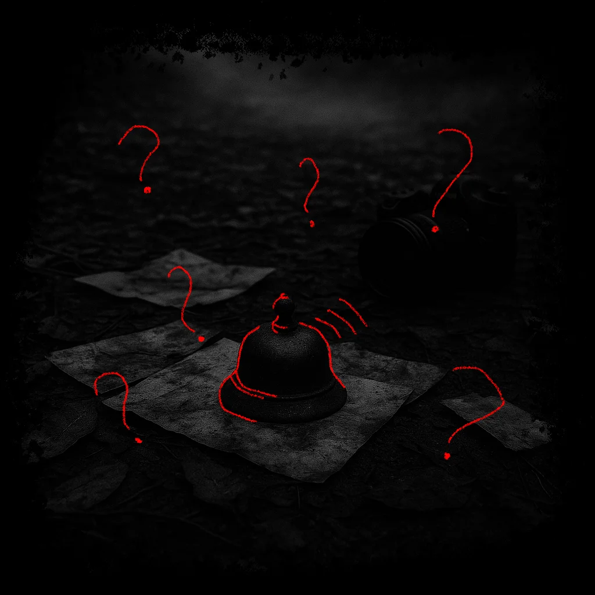

UM FILME DE
Thiago Castro&
Eduardo Andrade
Sinopse
Duas décadas após o fechamento de um antigo instituto de menores, um grupo de cinegrafistas amadores decide gravar um documentário chamado Sombras que Ecoam, investigando os abusos sofridos pelos ex-internos, que viviam na sombra da sociedade. Mas, conforme avançam nas gravações, começam a entender que podem ter desencadeado algo do passado. As câmeras continuam gravando... até o fim.

Elenco
-
{{ item.titulo }}
{{ item.texto }}